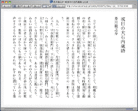
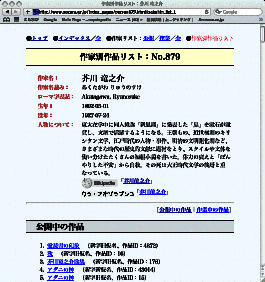
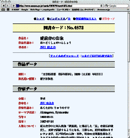
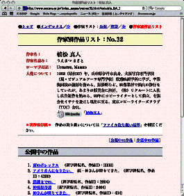
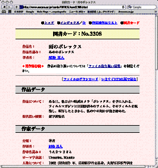
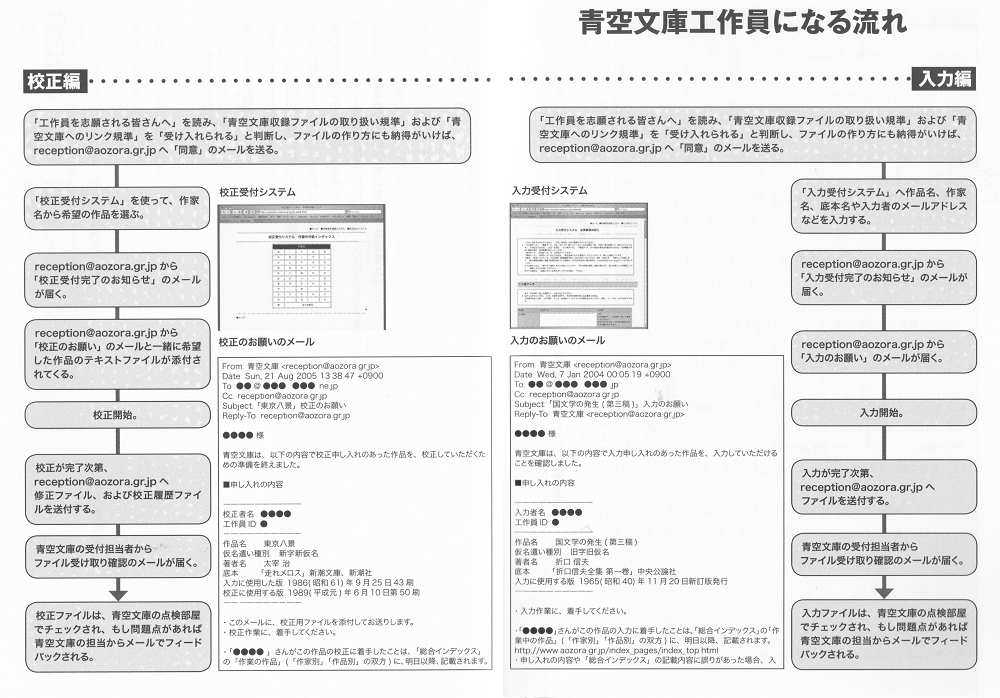

（この文書は、主に青空文庫（https://www.aozora.gr.jp/）のトップページからお越しになった方へ向けて、書かれています。あしからず。）
青空文庫は、誰にでもアクセスできる自由な電子本を、図書館のようにインターネット上に集めようとする活動です。
著作権の消滅した作品と、「自由に読んでもらってかまわない」とされたものを、テキストとＸＨＴＭＬ（一部はＨＴＭＬ）形式に電子化した上で揃えています。

作品ファイルは、縦組みを意識した統一した形式でまとめてあります。
いろいろな方が開発してくれた青空文庫対応の表示ソフトを利用すれば、本のページをめくるように、作品を読んでいけます。
多くの人に、快適に作品を味わい、自由にファイルを使ってもらうことは、この場を整えている私たちの願いです。
どうか青空文庫を、活用してください。
青空文庫では、公開されている作品を、「作家別」「作品別」「分野別」「検索」で探すことができます。
特定の作家の作品を「作家別」から探すときは、まず、「総合インデックス」（https://www.aozora.gr.jp/index_pages/index_top.html）目次ページ、「公開中の作品」の「作家別」欄で、名字の一文字目の音を五十音の中からクリックします。
その音で始まる作家が並びますので、姓の五十音順で並んでいる著者名をたどって、その作家を見つけてください。（「総合インデックス」では、人物名が新字で表記されているため、「芥川」は「龍之介」でなく「竜之介」、「みだれ髪」の歌人は「與謝野晶子」ではなく「与謝野晶子」になっています。）
著者名をクリックすると、その作家の「作家別作品リスト」が開きます。「作家別作品リスト」の「公開中の作品」ブロックで、すでに公開されている作品を一覧できます。（一方「作業中の作品」ブロックでは、公開に向けて作業が進んでいる作品を確認できます。）
「作品リスト」では五十音順で作品名が並んでいます。ウェッブブラウザーの検索機能を使うか、五十音順で探していって、目指す作品を見つけてください。目指す作品が「公開中の作品」ブロックで見つかれば、この作品は、すでに読める状態にあります。
見つかった作品名をクリックすると、その作品の「図書カード」が開きます。
その音で始まる作家が並びますので、姓の五十音順で並んでいる著者名をたどって、その作家を見つけてください。（「総合インデックス」では、人物名が新字で表記されているため、「芥川」は「龍之介」でなく「竜之介」、「みだれ髪」の歌人は「與謝野晶子」ではなく「与謝野晶子」になっています。）
著者名をクリックすると、その作家の「作家別作品リスト」が開きます。「作家別作品リスト」の「公開中の作品」ブロックで、すでに公開されている作品を一覧できます。（一方「作業中の作品」ブロックでは、公開に向けて作業が進んでいる作品を確認できます。）
「作品リスト」では五十音順で作品名が並んでいます。ウェッブブラウザーの検索機能を使うか、五十音順で探していって、目指す作品を見つけてください。目指す作品が「公開中の作品」ブロックで見つかれば、この作品は、すでに読める状態にあります。
見つかった作品名をクリックすると、その作品の「図書カード」が開きます。
「作品別」から探すときは、まず、「総合インデックス」（https://www.aozora.gr.jp/index_pages/index_top.html）目次ページ、「公開中の作品」の「作品別」欄で、作品の一文字目の音をクリックします。
すると「作品一覧」が開きますので、ウェッブブラウザーの検索機能を使うか、五十音順で探していって、その作品を見つけてください。
「作品一覧」では、ウェッブブラウザーの１ページに、作品名が50件、表示されます。
次のページを開くときには、表の上と下にある「次の50件」、もしくは「ページ：１ ２ ３……」の次の番号をクリックしてください。（ウェッブブラウザーのウインドウの横幅を狭く設定していると、「ページ：１ ２ ３…… 次の50件」が表示されないことがあります。見えないときは、ウインドウの横幅を広げるか、横方向にスクロールさせてください。）
見つかった作品名をクリックすると、その作品の「図書カード」が開きます。
すると「作品一覧」が開きますので、ウェッブブラウザーの検索機能を使うか、五十音順で探していって、その作品を見つけてください。
「作品一覧」では、ウェッブブラウザーの１ページに、作品名が50件、表示されます。
次のページを開くときには、表の上と下にある「次の50件」、もしくは「ページ：１ ２ ３……」の次の番号をクリックしてください。（ウェッブブラウザーのウインドウの横幅を狭く設定していると、「ページ：１ ２ ３…… 次の50件」が表示されないことがあります。見えないときは、ウインドウの横幅を広げるか、横方向にスクロールさせてください。）
見つかった作品名をクリックすると、その作品の「図書カード」が開きます。
「トップページ」（https://www.aozora.gr.jp/）にリンクで組み込まれた「青空文庫 分野別リスト」（http://yozora.main.jp/）では、日本十進分類法（ＮＤＣ）にのっとって内容別に分類された一覧から、公開中の作品を探せます。
児童書に限定したリストも用意してあります。
「青空文庫 分野別リスト」は、しだひろしさん、Juki さん、あすなろさんによる分類データをもとに、おかもとさんによってまとめられ、維持されています。
児童書に限定したリストも用意してあります。
「青空文庫 分野別リスト」は、しだひろしさん、Juki さん、あすなろさんによる分類データをもとに、おかもとさんによってまとめられ、維持されています。
「トップページ」（https://www.aozora.gr.jp/）右上の Google 検索窓で、目指す作品の有無を、手っ取り早く確認できます。
作家名からも探せます。仮名でも、検索可能です。
「木曽路」、「御一新」といった、特定の語句を用いた作品も、ここで探せます。
作家名からも探せます。仮名でも、検索可能です。
「木曽路」、「御一新」といった、特定の語句を用いた作品も、ここで探せます。
あなたが探している作品は、もしかしたらまだ青空文庫で公開されていないかもしれません。
公開に向けて入力や校正が進んでいる作品を「作家別」「作品別」双方から確認することができます。
「作家別」から「作業中の作品」を探す際には、「総合インデックス」（https://www.aozora.gr.jp/index_pages/index_top.html）目次ページにある「作業中の作品」の「作家別」→「作業中作家リスト」→知りたい作家の名前の順番にクリックしてみてください。「作家別作品リスト」のページに辿り着きます。同ページ内の「作業中の作品」にて、作業中の作品名を確認することができます。
どの底本を元に、誰がどこまで作業を進めているかといった詳細は、「作業中の作品」見出しのすぐ下にリンクしている「→作業中 作家別作品一覧」をクリックすると確認することができます。
一方、「総合インデックス」（https://www.aozora.gr.jp/index_pages/index_top.html）目次ページの「作業中の作品」の「作品別」をクリックすると、五十音順に作品名が並んだ詳細一覧が直接開かれます。
公開に向けて、入力や校正の作業がどこまで進んでいるかは、どの一覧表においても「状態」欄で確認することができます。
公開に向けて入力や校正が進んでいる作品を「作家別」「作品別」双方から確認することができます。
「作家別」から「作業中の作品」を探す際には、「総合インデックス」（https://www.aozora.gr.jp/index_pages/index_top.html）目次ページにある「作業中の作品」の「作家別」→「作業中作家リスト」→知りたい作家の名前の順番にクリックしてみてください。「作家別作品リスト」のページに辿り着きます。同ページ内の「作業中の作品」にて、作業中の作品名を確認することができます。
どの底本を元に、誰がどこまで作業を進めているかといった詳細は、「作業中の作品」見出しのすぐ下にリンクしている「→作業中 作家別作品一覧」をクリックすると確認することができます。
一方、「総合インデックス」（https://www.aozora.gr.jp/index_pages/index_top.html）目次ページの「作業中の作品」の「作品別」をクリックすると、五十音順に作品名が並んだ詳細一覧が直接開かれます。
公開に向けて、入力や校正の作業がどこまで進んでいるかは、どの一覧表においても「状態」欄で確認することができます。
作品を読むために必要なファイルは、「図書カード」から引き落とせます。
「図書カード」で「作品名」「著者名」の下に表示されている「いますぐＸＨＴＭＬ版で読む」（もしくは「いますぐＨＴＭＬ版で読む」）をクリックすると、ウェッブブラウザーのウインドウに作品を表示させることができます。
ある作品に用意されたファイルの種類をすべて確認してから、引き落とすものを決めたいときは、「いますぐＸＨＴＭＬ版で読む」の左の、「ファイルのダウンロード」をクリックしてください。
「ファイルのダウンロード」欄には、この作品に用意されている、すべての形式のファイルが並んでいます。
テキストは、もっとも基本的な形式のファイルです。青空文庫形式のテキストに対応した、様々な表示ソフトが開発されています。
「図書カード」にある「作品について」の「備考」欄には、こうした表示ソフトのなかでもネットブラウザから利用可能なものに、リンクを貼ってあります。クリックするだけで、当該アプリケーションへとジャンプできます。（また「青空文庫のＸＨＴＭＬ，ＴＥＸＴの読み方」（https://www.aozora.gr.jp/readingTEXT/）にも、読みやすくするための方法が紹介されていますので、こちらもご参照ください。）
また「備考」欄には、ＳＮＳなどで感想を共有するためのボタンや朗読を検索するための簡易的なボタンも添えられています。どうぞご活用ください。
「図書カード」で「作品名」「著者名」の下に表示されている「いますぐＸＨＴＭＬ版で読む」（もしくは「いますぐＨＴＭＬ版で読む」）をクリックすると、ウェッブブラウザーのウインドウに作品を表示させることができます。
ある作品に用意されたファイルの種類をすべて確認してから、引き落とすものを決めたいときは、「いますぐＸＨＴＭＬ版で読む」の左の、「ファイルのダウンロード」をクリックしてください。
「ファイルのダウンロード」欄には、この作品に用意されている、すべての形式のファイルが並んでいます。
テキストは、もっとも基本的な形式のファイルです。青空文庫形式のテキストに対応した、様々な表示ソフトが開発されています。
「図書カード」にある「作品について」の「備考」欄には、こうした表示ソフトのなかでもネットブラウザから利用可能なものに、リンクを貼ってあります。クリックするだけで、当該アプリケーションへとジャンプできます。（また「青空文庫のＸＨＴＭＬ，ＴＥＸＴの読み方」（https://www.aozora.gr.jp/readingTEXT/）にも、読みやすくするための方法が紹介されていますので、こちらもご参照ください。）
また「備考」欄には、ＳＮＳなどで感想を共有するためのボタンや朗読を検索するための簡易的なボタンも添えられています。どうぞご活用ください。
青空文庫には、作者の死後50年を経て著作権の消滅した作品と、著作権者が「インターネットを通じて読んでもらってかまわない」と判断したものの、二種類がおさめられています。
著作権が消滅した作家の「作家別作品リスト」と「図書カード」は、青の地色で表示されます。

著作権が存続している作家の「作家別作品リスト」と「図書カード」は、ピンクの地色で表示されます。

（「青」「ピンク」は、モニターの色数設定によっては、異なった色合いとなることがあります。）
著作権が消滅したものについては、原則自由に利用できますが、利用に当たっての注意点が、「青空文庫収録ファイルの取り扱い規準」（https://www.aozora.gr.jp/guide/kijyunn.html）に示されています。
また、著作権存続の「作家別作品リスト」と「図書カード」には、「＊著作権存続＊ 作品の取り扱いについては「ファイル取り扱い規準」を御覧ください。」と注記されています。著作権存続作品のご利用をお考えの場合は、規準を閲覧した上で、作品ファイルの文末や著者のサイトを確認し、そこに記された指示・許諾に従ってください。
（なお、翻訳された作品に関しては、訳者に独立した著作権が生じています。書いた人の権利は消滅していても、訳した人の権利が生きている場合、これらは、「著作権の存続している作品」に該当する点、注意してください。）
ファイル形式の変更や、複製、再配布を検討される方は、必ずこの「規準」に目を通してください。そのほか利用方法については、「青空文庫ＦＡＱ」（https://www.aozora.gr.jp/guide/aozora_bunko_faq.html）もご参照ください。
青空文庫は、ボランティアの力で成り立っています。
入力、校正、ファイル作成などに力をふるってくれる皆さんを、青空文庫では「青空耕作員」もしくは「青空工作員」と呼んでいます。
「自分も耕作員・工作員として動いてみよう」と思われた方は、まず、「耕作員を志願される皆さんへ」（https://www.aozora.gr.jp/guide/kousakuin.html）を参照してください。
青空文庫耕作員・工作員になる流れについては、以下の図のようになります。

（野口英司［編著］『インターネット図書館 青空文庫』はる書房、p74-75より）
青空文庫に収められている野口英司・宮川典子「青空文庫ものがたり インターネット図書館の開設から今日まで」には、誕生から二〇〇五年に至る青空文庫の歩みがまとめられています。そのほか「直面した課題」（https://www.aozora.gr.jp/houkokusyo/kadai.html）のページにも、青空文庫の奮闘の経緯がまとめられています。
また青空文庫編「青空文庫の提案」にはその初心が記されています。「青空文庫のしくみ」（https://www.aozora.gr.jp/aozora_bunkono_shikumi.html）では、運営体制の説明がされています。
その他よくある質問に関しては、「青空文庫ＦＡＱ」（https://www.aozora.gr.jp/guide/aozora_bunko_faq.html）にまとめてあります。お問い合わせをする前に、まずはこちらをご覧ください。
雑誌や書籍・ネットなどで青空文庫をご紹介くださる方に、お願いします。
ＵＲＬ・画面キャプチャー付きで掲載していただく際も、ご報告や許諾を求めるご連絡はいりません。掲載誌や掲載サイトも、お知らせ・お送りいただく必要はありません。
青空文庫に対するお問い合わせは、info＠aozora.gr.jp までお願いいたします。
以前の青空文庫早わかりについては、こちら（https://www.aozora.gr.jp/guide/nyuumon.html）にあります。